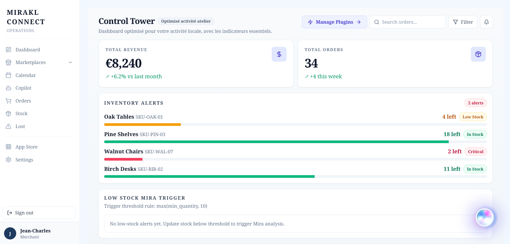
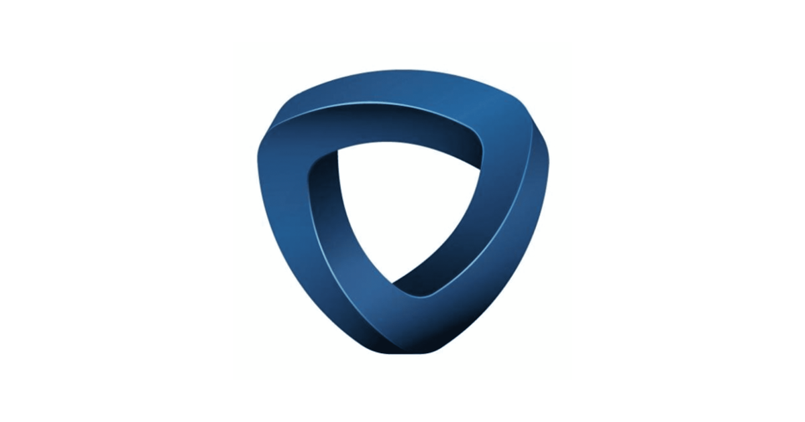

MIRAKL
MIRAKL / CONNECT
HACKATHON × EUGENIA
Powered by Leia
Merchant Ops Copilot
v0.1 · 2026
⚡
get_stock_summary
✓
!
4 produits à surveiller
Stock actuel sur SKUs actifs · alertes remontées par Leia
Walnut Chairs
SKU-WAL-07
2 left
Critical
Oak Tables
SKU-OAK-01
4 left
Low stock
📅
create_calendar_event
✓
🏖️
Congés Savoie
10 mai
→
20 mai
· 10 jours
Impact élevé
⚠
3 SKUs iront en rupture
Projection pendant les 10 jours d'absence
Walnut Chairs
−14
Oak Tables
−8
Birch Desks
−4
MAI
2026
L
M
M
J
V
S
D
1
2
3
4
5
6
7
8
9
10
11
12
13
14
15
16
17
18
19
20
21
22
23
24
25
26
27
28
29
30
31
📦
Plan de restock avant congés
Commander avant le
7 mai
· Horizon 10 jours · 4 fournisseurs
€2,430
4 commandes estimées
Walnut Chairs
Commander
50
unités · Scandi Wood
Critical
Oak Tables
Commander
30
unités · Nordic Timber
High
Birch Desks
Commander
18
unités · Baltic Wood Co.
Medium
Approuver la sélection →
✓
4 commandes créées
Jean-Charles peut partir en confiance
Mirakl × Eugenia
Hackathon · 2026
Merchant Ops
v0.1

LEIA